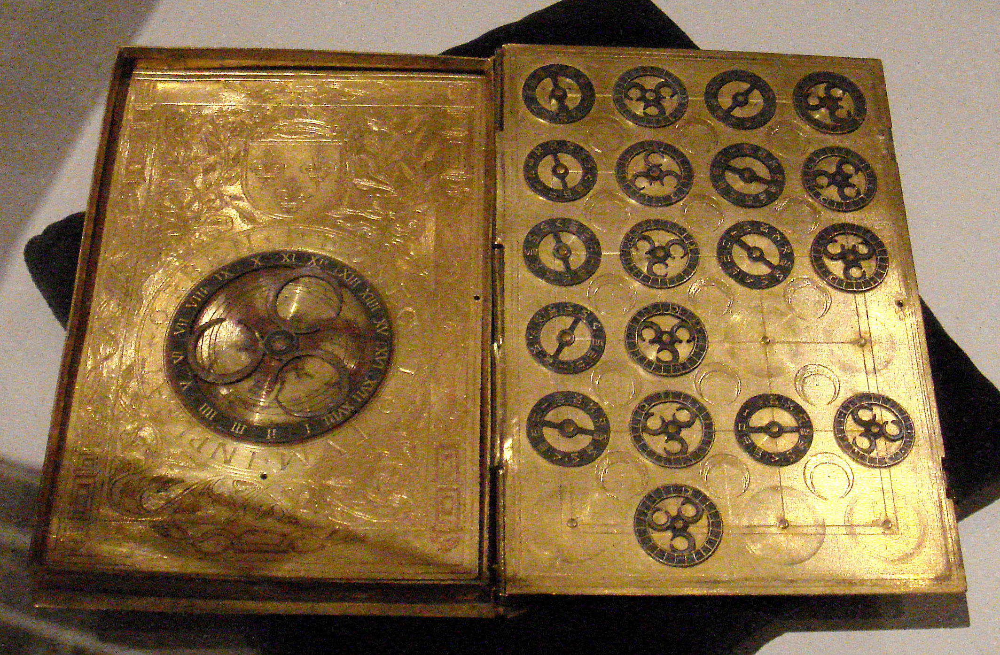
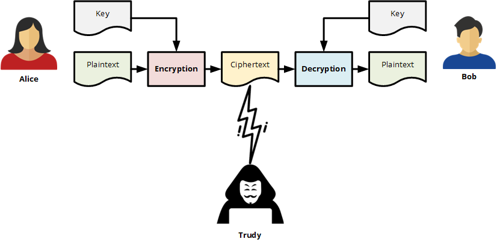
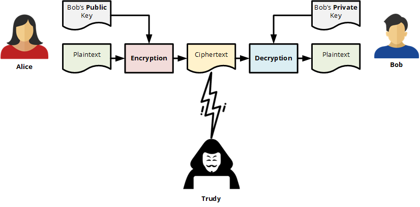
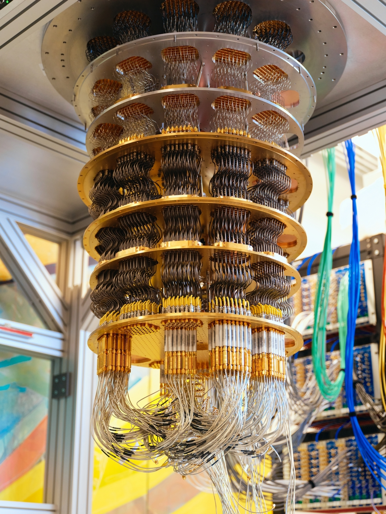

Увод у историју криптографије и важност криптографије у савременом свету¶
Још од давнина, када су људи почели да пишу, постојала је потреба да се неки писани текст сакрије, односно заштити. Развијањем техника за скривање забележених информација, појавила се нова научна област – криптографија.
Криптографија је научна дисциплина која се бави развојем система за шифровање информација. Реч криптографија потиче од грчких речи κρυπτός (скривен, тајан) и γράφειν (писати).
Прву књигу о криптографији, под називом „Књига о шифрованим порукама“, према историјским изворима, написао је арапски филозоф Ал-Халил (717–786), у којој се први пут користе пермутације и комбинације за набрајање свих арапских речи са и без самогласника. Међутим, класичне методе шифровања често откривају статистичке обрасце о изворној поруци, што се може искористити за разбијање шифре.
Након открића фреквенцијске анализе слова у поруци, арапски математичар Ал-Кинди је у деветом веку написао књигу „Рукопис за дешифровање шифрованих порука“, у којој је први пут описана употреба техника фреквенцијске анализе.
Криптоанализа је научна дисциплина која проучава методе за „разбијање“ криптографских система. Реч криптоанализа потиче од грчких речи κρυπτός (скривен, тајан) и αναλύειν (анализирати).
Први познати трактат о криптографији написао је на 25 страна италијански архитекта Леоне Батиста Алберти 1467. године. Он је и творац шифровачког круга и других решења за двослојно скривање текста. У 16. веку значајан допринос дали су милански лекар Ђироламо Кардано, математичар Батиста Порта и француски дипломата Блез де Виженер.

У 19. веку је закључено да криптографија не треба да се ослања на тајност алгоритама за шифровање, већ на тајност кључа. Тајност самог кључа мора бити довољна да спречи разбијање шифроване поруке. Ово је постало једно од основних начела криптографије, које је 1883. записао Огист Керкхофс (Керкхофсов принцип). Још експлицитније, поновио га је Клод Шенон, оснивач теорије информација и кључна личност теоријске криптографије, као Шенонову максиму: „непријатељ зна систем“.
Током Другог светског рата, Немци су направили машину звану Енигма која је шифровала поруке на до тада невиђен начин. Међутим, колико год да је у то време била револуционарна, савезници на челу са Аланом Тјурингом успели су да разбију Енигма криптографски систем криптоанализом.

Садашњост¶
После Другог светског рата, са развојем информационих технологија, криптологија, као наука о заштити информација, и њене научне поддисциплине постају све значајније. Савремени рачунари могу да разбију једноставне шифре невероватном брзином, па су криптографски алгоритми постали много напреднији.
Данас се у криптографији говори о симетричном шифровању, где се исти кључ користи и за шифровање и за дешифровање. Симетрично шифровање јр брже и погодније за велике количине података. Користи се када треба брзо заштитити податке - нпр. шифровање датотека на рачунару, шифровање комуникације током видео-позива или заштита података на диску или USB уређају.

Са друге стране, када је важно безбедно разменити кључеве, доказати ко је послао поруку или потписати документ дигиталним потписом, користимо асиметрично шифровање, где се користи пар јавног и приватног кључа:

Још један важан алат је криптографска хеш функција, која ствара јединствени дигитални отисак података и широко се користи у заштити лозинки, дигиталним потписима и блокчејн технологији.
Будућност¶
Гледајући унапред, очекује се да ће квантна криптографија постати темељ безбедне комуникације. Она се заснива на Хајзенберговом принципу неодређености у квантној физици. Међутим, квантно рачунарство представља и претњу за многе криптографске алгоритме који се данас користе, што је довело до развоја постквантне криптографије.

Значај криптологије у савременом друштву је немерљив. Криптографски системи обезбеђују приватност електронске комуникације, омогућавају безбедну електронску трговину, штите криптовалуте, а у неким државама чак обезбеђују електронско гласање и бројање гласова. Ипак, отварају се и бројне етичке дилеме. Да бисмо одговорили на њих, спремите се за дебату!
Дебата¶
Тема дебате: Да ли право на приватност треба да буде важније од безбедности друштва?
Подела улога
Тим А – За јаку заштиту приватности
Свака особа има право на приватну комуникацију. Шифровање штити грађане од злоупотреба, крађе идентитета и надзора. Нико, па ни држава, не би требало да има приступ приватним порукама без јасног законског основа.
Тим Б – За већу контролу ради безбедности
Потпуно шифровање може помоћи криминалцима и терористима да сакрију своје активности. Безбедносне службе понекад морају имати приступ комуникацији ради заштите грађана. Друштво мора пронаћи баланс између приватности и безбедности.
Разматрање аргумената можете обавити у групама између два часа или на самом часу, а потом следи размена становишта (свака група има 5 минута да образложи своје становиште). Остали ученици - порота - потом постављају питања и обе групе имају 10-ак минута да одговоре.
Оцењивање и одређивање победничке групе није неопходно, али јесте пожељна заједничка дискусија о свим изнетим аргументима. Нека додатна питања за дискуију могу бити: Да ли би полиција требало да има право да приступи шифрованим порукама осумњичених лица? Да ли бисте пристали да се ваше поруке анализирају ако би то спречило терористички напад? Који су ризици ако неко има приступ свим нашим подацима? Да ли су друштвене мреже довољно транспарентне у погледу података које прикупљају? Да ли су млади свесни колико личних података остављају на интернету? Да ли је лозинка довољна за заштиту налога или су потребне додатне мере безбедности?